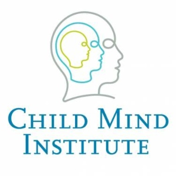
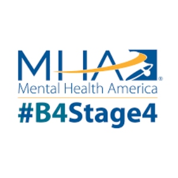

|

Child Mind InstituteThe Child Mind Institute's clinical practice is dedicated to providing the highest quality evidence-based care to children and families faced with mental health and learning disorders. The clinicians bring experience, expertise and a team approach to diagnosing and treating your child. Learn More |
National Institute of Mental HealthThe National Institute of Mental Health (NIMH) is the lead federal agency for research on mental disorders. NIMH is one of the 27 Institutes and Centers that make up the National Institutes of Health (NIH), the largest biomedical research agency in the world. Learn More |

Mental Health AmericaMental Health America (MHA) is the nation's leading community-based nonprofit dedicated to addressing the needs of those living with mental illness and to promoting the overall mental health of all Americans. Their current work is guided by the Before Stage 4 philosophy. Learn More |
|---|
1. Host a mental health screening event. Visit the Screening for Mental Health website to find out more!
2. Talk about it. Ask people how they're doing and mean it! Always be ready to listen and encourage.
3. Share your story. Have you personally struggled or currently struggle with mental illness? Don't hesitate to tell friends and family about it. Your story can encourage others to ask for help.
4. Read about it. Educate yourself about mental illness and suicide. Learn about the signs and symptoms and where to receive help in your area.
6. Volunteer with local mental health awareness organizations.
7. Watch out for bullying at school or in the office. Bullying can lead to many difficulties including depression. Be aware of destructive behavior around you and report it to a trusted adult when necessary.
8. Encourage friends and family to eat healthy for mental health. Good nutrition can make a difference in how we feel.
9. Organize group workouts with friends to improve your mental health. Exercise is a great mood booster and is even more effective when you spend time with friends!
10.Talk about mental health with your children. Don’t assume kids are too young to understand. Depression can affect children in elementary school.